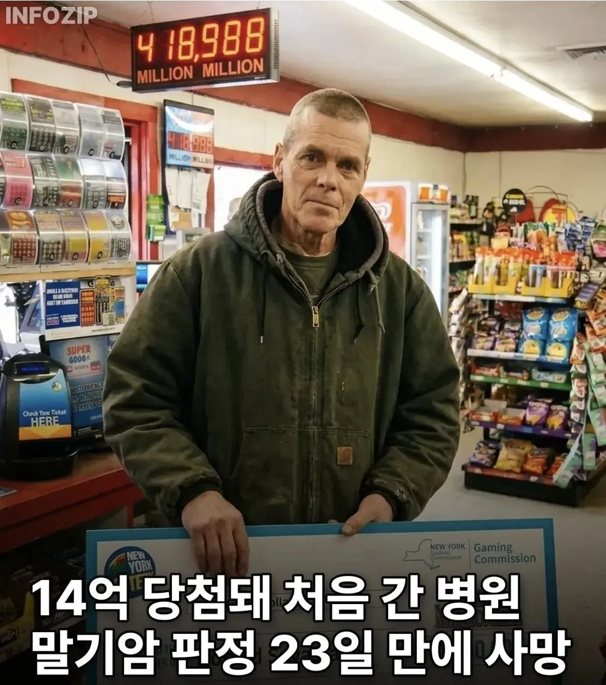

평생 꿈꾸던 복권 1등에 당첨됐지만 그 돈으로 처음 찾은 병원에서 말기암 판정을 받은 남성의 이야기가 다시 알려지며 안타까움을 주고 있다.
미국 뉴욕주 시드니에 살던 51세 목수 도널드 사바스타노는 2017년 12월 즉석 복권을 긁어 100만 달러, 우리 돈 약 14억 원에 당첨됐다. 그는 자영업자라 건강보험이 없었고, 한동안 몸이 좋지 않았지만 병원비가 부담돼 진료를 계속 미뤄 왔다.
당첨금을 받은 그는 그제야 그 돈으로 병원을 찾았다. 새 트럭을 사고 여행도 다녀올 계획이었지만, 의사가 내린 진단은 뇌와 폐까지 퍼진 4기 암이었다.
그는 2018년 1월 말, 당첨금을 받은 지 불과 23일 만에 세상을 떠났다. 돈이 없어 미뤄 온 병원을 돈이 생기고 나서야 갔다는 사실에 많은 사람이 씁쓸함을 감추지 못했다.
사진은 AI 같은데 스토리는 어떠려나